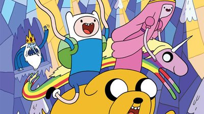
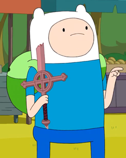

Sinopse:
A série segue as aventuras de Finn, o Humano
e o seu melhor amigo e irmão adotivo Jake, o Cão, que se
aventuram na Terra de Ooo, num futuro pós-apocalíptico por
volta de mil anos após a "Grande Guerra dos Cogumelos", sendo
Finn presumidamente o último humano existente.
Autor: Pendleton Ward
Primeiro episódio: 5 de abril de 2010
Adaptações:Nenhuma
Gêneros: Aventura, Ação, Comédia, Ficção Científica
| Temporada | Eps | Temporada | Eps |
| Temporada 1 | Temporada 8 | ||
| Temporada 2 | Temporada 9 | ||
| Temporada 3 | |||
| Temporada 4 | |||
| Temporada 5 | |||
| Temporada 6 | |||
| Temporada 7 |
